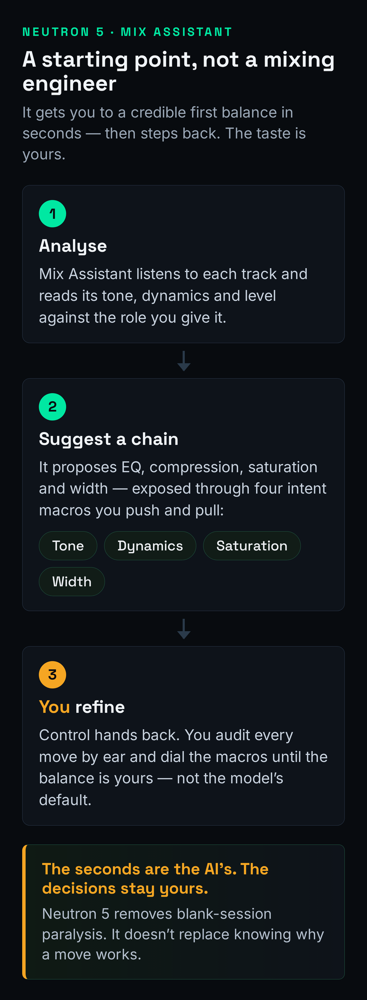
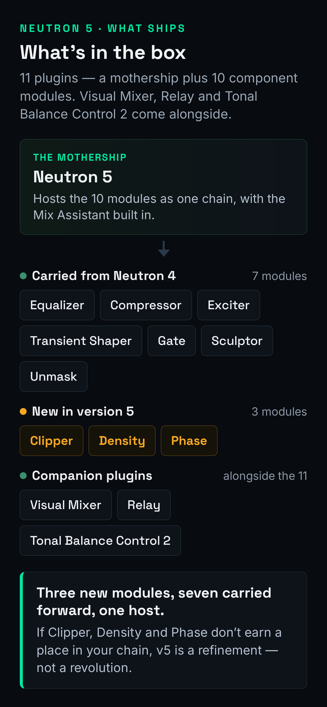
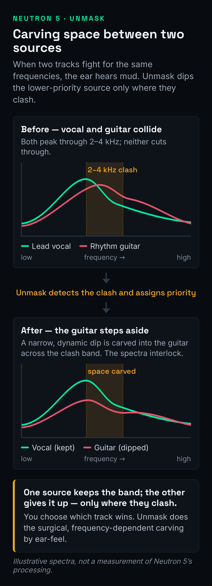

Most reviews of an "AI mixing" plugin sell you the same daydream: drop it on the master, press the glowing button, and a finished mix falls out. That is not what Neutron 5 is, and the producers who buy it expecting that are the ones who end up disappointed. So let us be honest from the first line. Neutron 5's Mix Assistant does not mix your record — it gets you to a credible starting balance in seconds, and then hands the actual decisions back to you. Whether that is worth $299 depends entirely on a single question this whole review keeps circling: how often are you the person drowning in a forty-track session with a deadline, versus the person who already mixes confidently with stock plugins and a couple of trusted tools?
Neutron 5 is iZotope's AI-assisted mixing suite — eleven plugins (a mothership plus ten component modules) built around a Mix Assistant that listens to your tracks and proposes a starting chain of EQ, compression, saturation and width. Its real strengths are the Unmask masking workflow, the genuinely useful new modules (Clipper, Density, Phase), and the speed it gives someone fighting a crowded session. But it is heavy, the assistant's choices still need your taste, and at $299 it only pays off if you mix often and mix busy. Buy it if you are drowning in tracks and want a fast, honest baseline. Skip it if you already EQ and compress confidently by ear with stock and a surgical tool or two.
The Verdict
The most complete AI-assisted mixing suite you can buy — a real time-saver for busy, crowded sessions, as long as you treat the Mix Assistant as a starting point and bring your own ears to finish the job.
| Mix Assistant (speed to a baseline) | 8.9 | |
| EQ & masking tools (Unmask, dynamic EQ) | 9.1 | |
| Module quality (Clipper / Density / Phase / Sculptor) | 8.8 | |
| Workflow / inter-plugin (Visual Mixer, Relay) | 8.7 | |
| CPU / efficiency | 8.0 | |
| Value vs. learning stock tools | 7.7 | |
| Who it’s for clarity | 8.6 |
Scored on iZotope's published specifications, the Neutron 5 documentation and release notes, and the consensus of hands-on reviews and long-term iZotope users — not a first-party bench test of its processing or a CPU null test. We have not measured Neutron 5's before/after or its DSP load on our own source files for this review, so every sonic and performance claim here is framed as craft judgment, and the diagrams below are clearly labelled as illustrative rather than measurements. Prices verified against izotope.com and major retailers on June 25, 2026; iZotope discounts often, so confirm the current price before you buy.
What Neutron 5 Actually Is (in Plain Language)
Strip away the marketing and Neutron 5 is two things in one box. The first is a collection of eleven plugins — a "mothership" that hosts a chain of processors in a single window, plus ten component modules you can also load individually on any track or bus. The second, the part people pay the premium for, is the Mix Assistant: an AI engine that listens to your audio, decides what it thinks the track needs, and builds a starting signal chain — an EQ move here, some compression there, a touch of saturation, a width adjustment — complete with macro controls you then nudge to taste. That is the whole concept. It is not magic and it is not a mixing engineer in a box. It is a fast, pattern-trained guess at "what would a reasonable first pass on this sound like," and the value of that guess depends entirely on how crowded and how rushed your session is.
The ten modules are the real substance. You get a 12-band Equalizer (static or dynamic, with mid/side and sidechain), a Compressor with a punch mode and sidechain metering, an Exciter, a Transient Shaper, a Gate, the Sculptor (a target-matching tone shaper), the Unmask masking tool, and three modules new to version 5 — Clipper, Density and Phase. Around the mothership sit three companion plugins: Visual Mixer for setting a static level balance across your whole session from one screen, Relay for routing track data into that picture, and Tonal Balance Control 2 for metering your mix against reference curves. If you want the bird's-eye view of how all of this fits together before we go deeper, our older iZotope Neutron guide walks the suite end to end; this review is about whether version 5 earns a buy.
The three companion plugins are easy to overlook and genuinely useful, so a word on the workflow they enable. Visual Mixer gives you a single screen showing every track in your session as a moveable dot, positioned by level and pan, so you can set a static balance for the whole mix by dragging dots around a picture rather than chasing faders across the arrangement — a faster, more musical way to rough in levels than the channel-by-channel grind. Relay is the small plugin you place on each track to feed it into that picture and to trim gain there, and it is also how iZotope's inter-plugin communication links instances together. Used as intended — Relay on every channel, Visual Mixer on the master to see and shape the whole field — you get a level-balance workflow that is one of the quietly best things in the suite, especially for producers who freeze up at "where do I even start with the faders." It will not make the taste decisions for you, but it makes the mechanical part of balancing a mix dramatically less tedious.
The macro controls deserve a word, because they are how most people will actually drive Neutron. When the Mix Assistant builds a chain, it does not just dump a wall of parameters on you; it groups the result under four intent panels — Tone, Dynamics, Saturation and Width — so you can shape the whole proposed mix in broad strokes before you ever open a single module. That framing is genuinely well done: it lets a beginner steer with words they understand instead of numbers they do not, and it lets a pro audition the assistant's idea in ten seconds and decide whether to keep it. Underneath, every module now has a Delta button that solos the difference signal, so you can hear exactly what each processor is doing rather than guessing — the single most educational feature in the suite, and we will come back to why.
One detail that separates Neutron 5 from a basic channel strip is that its processors can work in three channel modes, and understanding them changes how much you get from the suite. The default is ordinary stereo, where a move affects the whole signal. The second is mid/side, where you process the centre of the image and the sides independently — so you can, for instance, tighten the low mids in the middle where the kick and bass live while leaving the stereo width of the room and the cymbals untouched, or add air to the sides without making a centred vocal harsh. The third mode is transient/sustain, which splits the signal by time rather than space: it lets a module act differently on the sharp attack of a sound than on its ringing tail. Compressing only the sustain of a snare, or clipping only its transient, are precise moves that are clumsy or impossible on a one-mode plugin. These are not beginner features, but they are the kind of control that makes Neutron feel like a real engineer's toolkit rather than a gimmick, and once you know they exist you reach for them constantly.
The Honest Question First: Does the Mix Assistant Mix For You?
No. And the failure mode of believing otherwise is specific and predictable, so let us name it. A producer buys Neutron 5, runs the Mix Assistant on every channel, accepts every chain it builds, and ends up with a session that is technically "balanced" and completely lifeless — because balance is not the same as intention. The assistant has no opinion about whether this vocal should sit forward and intimate or sink back and ambient, how much weight this particular record wants in the low end, or what to sacrifice when the synth and the guitar are both shouting in the same octave. Those are the real decisions of mixing a full song, and the AI cannot make a single one of them. It can only push toward a sensible average, and an average is exactly what a distinctive mix is not.

The honest framing is the one in the diagram above: the Mix Assistant occupies a specific job — the cold-start problem — not the whole craft. Staring at forty raw tracks and not knowing where to begin is a real and paralysing problem, especially for newer producers, and getting to a usable first balance in seconds genuinely lowers the activation energy of a mix. Used that way — as a fast first pass you then audit and refine — it is a real asset and, surprisingly, a decent teacher: watching which frequencies it pulls down on a muddy bus shows you where mud lives faster than reading about it, and the Delta button lets you hear each move in isolation. If your mixes keep coming out muddy, Neutron will show you the problem regions — but you still have to decide what to do about them. Treat the chain it builds as a suggestion from a knowledgeable assistant, never an instruction from a boss. The moment you accept its moves without listening, you have outsourced the exact judgment you were supposed to be developing.
What's Actually New in 5: Clipper, Density and Phase
Version 5's headline additions are three component modules, and unlike a lot of "new in this version" filler, all three earn their place. The Clipper is a soft clipper with unusually deep control: it works across up to three bands, in stereo, mid/side, or transient/sustain modes, with oversampling to keep the clipping clean. That matters because clipping — shaving transient peaks rather than turning them down — is one of the most effective ways to add density and reclaim headroom on drums and buses, and having a flexible, multiband one inside your mixing suite means you stop reaching for a separate plugin. Our roundup of the best clipper plugins covers where this one sits against the dedicated options; the short version is that it is genuinely competitive, not a token inclusion.
To make that concrete: the most common use for the Clipper is taming the loudest peaks of a drum bus so the whole bus can sit louder without the limiter on your master working overtime. A few stray snare or kick transients are often several decibels above everything else, and pulling them down with a fast compressor flattens the groove; shaving just those peak tips with a soft clipper preserves the punch while reclaiming the headroom they were stealing. Run it on the transient/sustain mode targeting only the attack, set the threshold so it is catching just the worst few hits, and you will hear the bus get noticeably denser and steadier without sounding squashed. The multiband option lets you clip, say, the boomy low end of the kick harder than the snare's body. It is the kind of move that used to require a separate, often expensive, dedicated plugin, and having a flexible one inside the suite genuinely changes how you approach loudness on a mix.

Density is the cleverest of the three. It is an upward compressor — instead of pulling loud parts down, it lifts the quiet parts up, leaving anything above its threshold untouched. The effect is added presence, weight and intelligibility without the pumped, squashed feel of hard downward compression. It runs multiband across up to three frequency bands, can auto-learn its crossover points, and offers mid/side modes, which makes it a precise tool for, say, reinforcing a weak or inconsistent vocal or thickening a thin bass without flattening the whole signal. If you have only ever used downward compressors, Density is worth the upgrade on its own as a lesson in how the other half of dynamics control works. The Phase module is the quiet utility of the trio: it analyses asymmetry within a signal or phase relationships between two tracks and gives you tools to correct them, recovering headroom that out-of-phase or lopsided waveforms quietly eat. None of these three is a gimmick. Together they are the strongest argument for choosing Neutron 5 over an older version or a thinner competitor.
It is also worth saying what the new modules are not: replacements for your whole dynamics chain. A multiband upward compressor and a flexible clipper are specialist tools that complement, rather than replace, the workhorse compressors and limiters you already trust. If you are still building out your dynamics toolkit, our guide to the best multiband compressor plugins sets Density's behaviour in context against the broader field, and the wider mixing plugins worth owning in 2026 roundup shows where a suite like Neutron fits in a working setup versus a collection of single-purpose tools.
Where It Genuinely Shines: Unmask and the Masking Workflow
This is the section that justifies the purchase for the right person, so here is the problem it solves. In a busy arrangement, instruments fight for the same frequency real estate — the vocal and the lead both crowding 2–4 kHz, the kick and the bass both claiming 60–100 Hz. That overlap is frequency masking: two sounds occupying the same band, each making the other less clear. Solving it by hand means soloing pairs, hunting the clash, carving a dip in one source to make room for the other, and repeating that across every conflict in the session. It is slow, fiddly work that rewards patience over creativity, and it is exactly the kind of task an assistant should take off your hands. Our mixing EQ guide walks the manual version in full; Neutron's Unmask automates the tedious middle of it.

Here is how Unmask works. You place it between two instances of Neutron sitting on the two conflicting channels — say the vocal and the rhythm guitar — and it shows you, in one window, the masking between them, with access to the EQ of both tracks at once. You tell it which source is the priority, and it gently pulls back the masking frequencies of the other where they collide, so the guitar steps out of the vocal's way in exactly the regions where they clash — without you soloing a single pair. Because iZotope's inter-plugin communication lets instances talk to each other across tracks, the whole conflict becomes one decision instead of a dozen. The result, illustrated above, is two spectra that interlock rather than overlap. Paired with the Sculptor module — which matches a source toward a target tonal shape using moving EQ and compression — the masking workflow is the part of Neutron that does something a stock channel strip simply cannot. If you want to see where your own tracks are colliding before you reach for any of this, our free frequency conflict detector visualises the overlap, and the frequency EQ reference tells you what lives in each region you are carving.
It is worth understanding why this matters beyond convenience, because that is what tells you whether you need it. Masking is not just an aesthetic problem — it is the single biggest reason a mix sounds cluttered, small or fatiguing even when every individual track sounds fine in solo. When two sources pile into the same band, your ear cannot fully resolve either, so you reach for volume to hear the one you care about, which makes the masking worse, which makes you reach for more volume: the loudness death-spiral that ends in a wall of mud. Carving complementary space is how professional mixes stay clear at low and high volume alike, and it is precisely the unglamorous, repetitive work that beginners skip and that separates an amateur mix from a clear one. Sculptor extends the idea in a different direction: rather than resolving two tracks against each other, it moves a single source toward a target tonal shape over time, using moving EQ and compression to keep, say, a vocal consistently sitting in its intended window even as the performance changes. Between Unmask handling conflicts and Sculptor handling consistency, Neutron's tonal toolkit is doing genuinely advanced work that most producers otherwise do slowly, by hand, or not at all.
Is Neutron 5 Still Current in 2026?
This question deserves a straight answer, because Neutron 5 is not a 2026 launch — it arrived in late 2024 — and in a year when several flagship tools have been refreshed, it is fair to ask whether you would be buying something already on the way out. The honest answer is that Neutron 5 remains iZotope's current shipping mixing flagship: there is no Neutron 6, it is still sold and maintained, and recent maintenance updates have kept it compatible with current DAW versions. It is mature rather than stale — the three new modules and the reworked Mix Assistant were the substance of the version 5 update, and they hold up. You are not buying abandonware; you are buying a settled, complete suite.
What that maturity means practically is that you should buy on the merits of the tool today, not on the promise of imminent new features, and you should buy on a sale. Neutron's list price moves a lot: the suite carries a $299 standalone tag but is very frequently discounted, with crossgrade pricing from any paid iZotope product and upgrade pricing from older Neutron versions bringing the real cost down substantially for existing customers. iZotope also folds Neutron into larger bundles. Because of that, the worst way to buy Neutron is at full price on a whim; the best way is to decide it fits your workflow, then wait for one of the regular sales. If your interest is specifically the AI-assisted approach across the category rather than this one suite, our roundup of the best AI mixing plugins in 2026 places Neutron against its rivals and the newer entrants.
Neutron 5 vs Mixing With Stock and a Couple of Tools
This is the comparison that actually decides the purchase, and almost no review frames it honestly, so let us. The real competitor to Neutron 5 is not another suite — it is your DAW's stock plugins plus two or three tools you already trust. A modern DAW ships with a perfectly good parametric EQ, a competent compressor, often a limiter and a saturator. If you can already drive those confidently, what does Neutron add? Honestly: speed and the masking workflow, not raw sonic capability you cannot get elsewhere. The EQ in Neutron is excellent but not categorically better than a good stock or surgical EQ; the compressor is solid but not a boutique character piece. What you are paying for is the assistant that assembles a starting chain and the Unmask system that no stock channel strip replicates.
That said, it is worth being precise about the EQ, because "not categorically better than stock" undersells it slightly. Neutron's equalizer is a full 12-band parametric EQ where any band can be switched into dynamic mode — reacting only when a frequency crosses a threshold, so you can tame a resonance that flares on loud notes without permanently dulling the quiet ones — and it carries the mid/side and sidechain options too. That is a more capable EQ than many DAWs ship, and against the dedicated field it holds up: our roundup of the best EQ plugins places this class of dynamic, surgical-capable equalizer among the tools worth owning. The honest point is not that Neutron's EQ is weak — it is strong — but that if a strong EQ is all you need, you can buy one for far less than the price of the whole suite. You pay the Neutron premium for the assistant and the masking system; the excellent EQ is a bonus, not the reason.
So the value question splits cleanly by who you are. If you mix slowly, fight to get started, work on crowded sessions, and value getting to a credible baseline fast, Neutron's $299 buys you real, repeated time savings — the kind that compound across a hundred sessions. If you already mix confidently with stock plus, say, a surgical EQ and a good compressor, Neutron is a convenience and a couple of genuinely nice modules, not a capability you lack, and the value proposition gets much weaker — which is exactly why that axis is the honest low score on the card above. This is also the line that separates Neutron from iZotope's mastering suite: our iZotope Ozone 12 review covers the master-bus counterpart, and the two solve genuinely different problems — Neutron for the many channels of a mix, Ozone for the final stereo master. If you are early in your journey and learning the moves, our beginner's guide to mixing and the best mixing plugins for beginners will take you further, cheaper, than any assistant — because the assistant is most valuable after you understand what it is proposing.
Where It Falls Short
The honest weak points follow directly from what Neutron 5 is. First, it is heavy. Running multiple instances of a full mixing suite across a large session asks real things of your CPU, and while iZotope offers zero-latency modes and you can use the lighter component plugins individually, the mothership-on-every-track approach is not free. On an older machine or a very large session, you will feel it, and you will end up freezing tracks or using the modules selectively — which is fine, but it is not the frictionless experience the marketing implies. That is the reasoning behind the efficiency score; we have not run a first-party CPU benchmark, so treat it as judgment from documented behaviour and user consensus, not a measured figure.
Second, the behavioural caveat that matters most: the Mix Assistant's choices still need your taste. It will sometimes over-process, sometimes pick a chain that is technically reasonable but wrong for the song, and sometimes solve a problem you did not have. This is not a defect so much as the nature of the tool, and it points at the single discipline that separates people who get value from Neutron from people who get hurt by it: audit every move. Use the Delta button on each module, A/B with the assistant's chain bypassed, and trust your ears over the suggestion every time. Keep your gain-staging reference handy so you feed the assistant clean levels, and lean on the EQ problem solver when you are unsure whether a move it made is solving the right problem. The moment you accept its chains without listening, the suite has stopped helping you and started replacing your judgment with an average.
Third, the smaller gaps. Neutron is a mixing suite, so it is not where you go for surgical resonance suppression, exotic colour, or final mastering — those jobs point to dedicated tools. And the breadth that makes it appealing also makes it a lot to learn: eleven plugins, four macro panels, three channel modes and a fistful of new modules is more surface area than a single channel strip, and getting fluent takes time. For a focused worker who wants one EQ and one compressor they know cold, that breadth can feel like overhead rather than power.
Who Should Buy It, Who Should Skip It
Buy it if you regularly mix multitrack sessions and getting started is a recurring fight — the Mix Assistant's fast baseline and the Unmask masking workflow are the two features that justify the price, and nothing in your stock toolkit replicates the second. Buy it if you are early enough in your mixing journey to want a knowledgeable assistant with guardrails, provided you commit to the audit-every-move discipline: used that way, Neutron will make you better, not lazier, and the Delta button alone will teach you more about what each processor does than months of reading. Busy professionals who want a fast, honest first pass on a deadline get real, repeated value here too. And if you already own and like the new modules' jobs — multiband upward compression, flexible clipping, phase correction — the suite gathers them in one place.
Skip it if you already mix confidently and quickly with stock plugins plus a couple of trusted tools: at that point the Mix Assistant is solving a problem you no longer have, and you are paying for a starting point you can build yourself in the same time. Skip it if your CPU or session sizes make a heavy suite painful, and you would be fighting the tool as much as using it. And skip it if what you actually need is mastering, surgical resonance work, or a single character EQ — those are different jobs with better-suited tools. As with every plugin, the right call is not "is it good" — Neutron is plainly good — but "does it solve a problem I actually have, often enough to be worth $299." For the crowded-session mixer the answer is yes; for the confident stock-plugin minimalist it is usually no.
The Verdict: Is Neutron 5 Worth $299?
For the producer it is built for — someone mixing crowded multitrack sessions, fighting to get started, fighting masking, wanting a fast and honest baseline — yes, comfortably, especially on one of iZotope's frequent sales. The Mix Assistant solves the cold-start problem better than anything else at this level, Unmask does a job no stock channel strip replicates, and the three new modules are genuinely useful rather than version-bump filler. For that person this is an easy 8.5 and an easy buy, and the time it saves compounds across every session it touches.
For everyone else, the answer is "probably not at full price, and maybe not at all." If you already mix well by ear, the suite is a convenience rather than a capability you lack, and the money is better spent elsewhere. If you mostly master, that is Ozone's job, not Neutron's. The suite earns its score on the strength of one class-leading workflow, three strong new modules and a thoughtful assistant — but whether it earns your $299 comes down to the single question this review has circled from the first line: how often are your sessions actually crowded and rushed enough to need it? iZotope offers a trial — run the Mix Assistant across your busiest, most masked mix, audit every move it makes with the Delta button, and the decision will make itself.
Try It Yourself: 3 Mixing Exercises
These work in the Neutron 5 trial, or with the stock plugins you already own — the skill matters more than the brand, and learning to hear these moves is exactly what stops an assistant from replacing your judgment.
- Run the Mix Assistant on a single busy track — a lead vocal or a drum bus works well.
- Before changing anything, open each module the assistant added and press its Delta button to hear that move in isolation.
- Write down, in plain words, what each move is doing: "cutting boxiness around 400 Hz," "adding air up top," "controlling the loud syllables."
- Now bypass the whole chain and A/B it against the raw track. Decide which moves you would keep and which you would not — and why. You have just learned to read a mix decision instead of trusting one.
- Find two tracks that fight — a vocal and a lead synth, or a kick and a bass.
- Put Neutron on both, open Unmask, and look at where their spectra collide.
- Set the more important source as the priority and let Unmask carve the other back where they clash.
- Bypass it and try to make the same dips by hand with a plain EQ. Compare the time it took and the result — this is the exact job you are paying the suite to do.
- Take a thin or inconsistent part — a quiet vocal or a weak bass — and add the Density module.
- Set it to upward compression and lift only the quiet passages, leaving the loud parts untouched. Listen for added presence rather than a pumping, flattened sound.
- Now try to achieve the same fullness with ordinary downward compression and gain. Notice how much harder it is to add body without losing dynamics.
- Finish by checking mono compatibility and phase — reach for the Phase module if the part feels weak or hollow when summed to mono.
Frequently Asked Questions
If you mix busy multitrack sessions and want a fast, credible starting balance, yes. The Mix Assistant solves the cold-start problem better than anything at its level, the Unmask masking workflow does a job stock plugins cannot, and the new Clipper, Density and Phase modules are genuinely useful. If you already mix confidently with stock plugins and a couple of trusted tools, the value is much weaker. It earns its 8.5 on workflow and module quality; whether it earns your $299 depends on how often your sessions are crowded and rushed.
Neutron 5 lists at around $299 standalone, but it is frequently discounted and is regularly available well below that in iZotope sales. There is crossgrade pricing (around $199) from any paid iZotope product and upgrade pricing from older Neutron versions, and it is also bundled into larger iZotope suites. A cheaper, cut-down Neutron 5 Elements exists for around $55. Always verify the current price on the vendor page before buying, since iZotope runs sales often — the best move is to wait for one.
No, and any review implying it does is misleading you. The Mix Assistant gets you to a sensible starting balance in seconds by proposing a chain of EQ, compression, saturation and width, but it cannot make the creative calls: how forward a vocal should sit, how much low end the record wants, what to sacrifice when two parts fight for the same range. Treat it as a knowledgeable starting point you then audit and refine with your own ears — never as an autopilot. The Delta button on each module lets you hear exactly what it did so you can judge each move.
Neutron 5 adds three brand-new modules — Clipper (flexible multiband soft clipping), Density (multiband upward compression for adding weight without squashing), and Phase (asymmetry and phase correction) — alongside an improved, faster Mix Assistant with macro controls grouped under four intent panels (Tone, Dynamics, Saturation, Width). It also brings a Delta button to every module for hearing the difference signal, mid/side and transient/sustain channel modes across the processors, improved metering and visualisations, and refreshed design. The fan-favourite modules from Neutron 4 — Unmask, Sculptor, Transient Shaper, Exciter, Gate, Compressor and EQ — all carry over.
They solve different stages of the same workflow. Neutron is a mixing suite, meant to go on the individual tracks and buses of your session to balance, shape and unmask them. Ozone is a mastering suite, meant to go on the final stereo master to polish the whole mix together. If you are balancing many channels, you want Neutron; if you are finishing a completed mix into a competitive master, you want Ozone. Many producers eventually own both, and iZotope bundles them together, but they are not interchangeable — buying one expecting the other's job is the most common iZotope mistake.
It can be, with one big caveat. The Mix Assistant lowers the activation energy of starting a mix, the four intent macros let you steer in plain language, and the Delta button is a genuinely good teaching tool. But a beginner who accepts every chain it builds without listening will learn nothing and end up with characterless mixes. Used as a coach — run it, then audit every move and ask why — it accelerates learning; used as a cheat, it stalls it. Honestly, building the underlying ear with stock plugins and a beginner mixing guide first will make Neutron far more useful when you do buy it.
It can be. Running the full mothership across many tracks in a large session asks real things of your CPU. iZotope offers zero-latency modes and you can load the lighter individual component modules where you do not need the whole suite, which helps a lot. On a modern machine with sensible use it is manageable; on an older system or a very large session you may need to freeze tracks or use the components selectively. We have not run a first-party benchmark, so treat this as judgment from documented behaviour and user consensus rather than a measured figure.
Yes. All ten component modules are available as individual plugins you can load on any track without ever touching the Mix Assistant, and the mothership lets you build your own chain from scratch. The EQ is a capable 12-band static or dynamic equalizer with mid/side and sidechain; the Compressor, Exciter, Transient Shaper, Gate, Clipper, Density and Phase all work as standard processors. You can ignore the AI entirely and treat Neutron as a well-built modular mixing toolkit, or use the assistant as a starting point and finish by hand — both are valid ways to work.